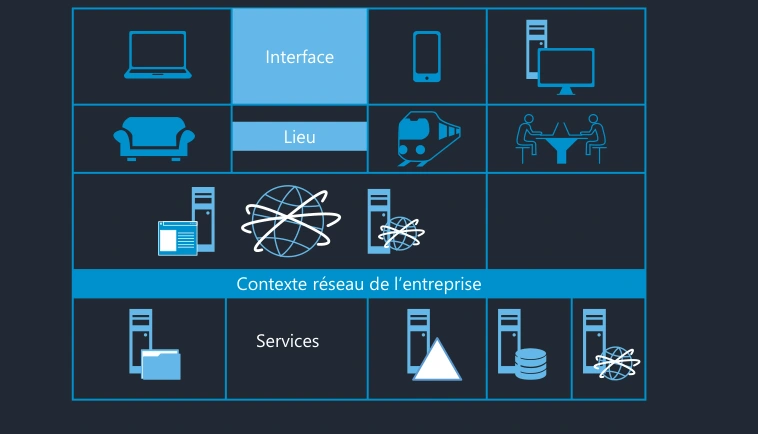
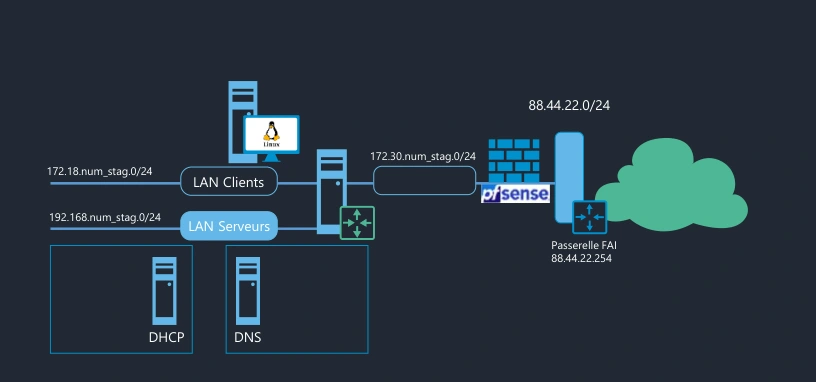

Transcription du document de formation dans l’ordre des pages.
Module 01 - Introduction

Interface, lieu et contexte réseau de l’entreprise donnent accès aux services.
Interface
Lieu
Contexte réseau de l’entreprise
Services

LAN Clients 172.18.num_stag.0/24. LAN Serveurs 192.168.num_stag.0/24 avec DHCP et DNS. Liaison 172.30.num_stag.0/24 vers pfSense. Réseau de la maquette 88.44.22.0/24 et passerelle FAI 88.44.22.254.
88.44.22.0/24
172.30.num_stag.0/24
LAN Clients 172.18.num_stag.0/24
192.168.num_stag.0/24
LAN Serveurs
Passerelle FAI 88.44.22.254
DHCP
DNS
Ici 88.44.22.0/24 à remplacer par le réseau de votre FAI, par exemple souvent 192.168.1.0/24
Adapter l'adressage réseau du LAN de votre FAI.
Ici 88.44.22.254 à remplacer par l'adresse IP de votre BOX, par exemple 192.168.1.1 ou 192.168.1.254
Adapter l'adresse IP de la passerelle FAI.